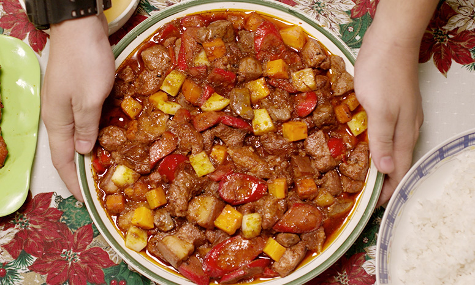

Menudo

Try one of the best filipino dish!
Preparation Time: 15 mins.
Cooking Time: 38 mins.
Total Time: 53 mins.
Ingredients
- 1 kg pork, kasim, sliced into 1-inch cubes
- 2 Tbsp soy sauce
- 1/2 tsp pepper, black
- 300 g pork, liver
- 2 Tbsp oil
- 1 tsp garlic, crushed
- 3/4 cup onion, red, chopped
- 2 Tbsp oyster sauce
- 1 pouch DEL MONTE Original Style Tomato Sauce (250g)
- 3 pcs bay leaf/laurel leaf
- 1 cup hotdog, sliced diagonally
- 1 cup water
- 1/4 cup oil
- 1 cup potato, cut into 1/2-inch cubes
- 1 cup carrot, cut into 1/2-inch cubes
- 1/2 cup bell pepper, red, cut into 1/2-inch squares
- 1/2 tsp salt
Instructions
- In a bowl, marinate the pork in 1 1/2 tablespoons soy sauce and 1/4 teaspoon pepper. Marinate for 10 minutes. In another bowl, marinate the liver in 1/2 tablespoon soy sauce and 1/4 teaspoon pepper. Set aside to marinade for 10 minutes.
- Heat oil in a pot. Sauté the liver until lightly browned. Remove from the pan and set aside.
- In the same pot, sauté the garlic and onion until the onions turn translucent and aromatic. Add the pork and cook until it changes color. Add the oyster sauce and cook for 10 minutes or until almost dry.
- Add DEL MONTE Original Style Tomato Sauce, bay leaf, liver, hotdog, and water. Bring to a boil then simmer for 10 minutes.
- While simmering, fry potato and carrot.
- Add the potato, carrot, and bell pepper to the pot. Simmer for 5 minutes. Season with salt.